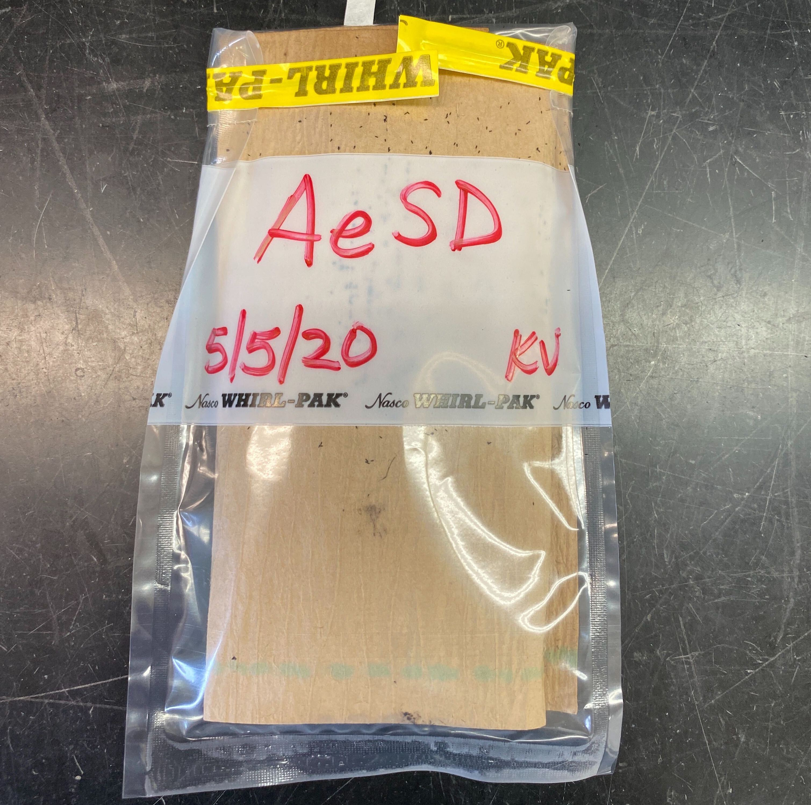

Insectary Operations
This document describes insectary operations for the maintenance and infection of Aedes aegypti mosquito strains with filarial parasites.
- Aedes aegypti (LVP) is used for Brugia spp. infections
- Aedes aegypti (AaSD) is used for Dirofilaria infections
Important General Notes:
-
Orders should be placed on the experimental mosquito Order Log found in the mosquito order binder, which is located in the insectary. Ensure that all fields of the log are filled out in order for your request to be fulfilled in a timely and accurate manner.
-
Mosquito orders are to be placed THREE WEEKS before they are needed for experimental use!
-
Expect a minimum of 1 L3 per infected mosquito (more typically 5 Bp L3 per mosquito, 1-3 Di L3 per mosquito). Keep in mind that ~20% may not blood-feed and ~20-50% may die off before extraction, which is not uncommon with high parasite burden. Overestimate the number of mosquitoes you will need to account for death throughout the rearing process
-
Standard mosquito orders are filled in the following quantities (can be adjusted according to your experimental needs):
- Small carton: 50 female LVP or 50 female AaSD
- Large carton: 1 carton/150 female LVP each or 4 cartons/350 female AaSD each
-
You are responsible for maintaining the sucrose pads and monitoring the adult mosquito death for your cartons throughout the duration of use.
-
Communicate regularly with Kathy throughout the mosquito rearing process and when you place an order, to ensure your experimental needs are met.
Overview of Ae. aegypti (LVP) Schedule
| Day | Task |
|---|---|
| 0 (Wednesday) | Hatch and pan out larvae |
| 1-3 (Thursday-Saturday) | Monitor larvae growth, feed double-ground food twice daily or PRN |
| 4-7 (Sunday-Wednesday) | Monitor larvae growth, feed once ground food twice daily or PRN |
| 8 (Thursday) | Prepare cartons and sucrose pads, separate pupae, fill mosquito orders |
| 9-11 (Friday-Sunday) | Adult mosquitoes emerge 2-3 days after pupation |
| 12- (Monday-) | Monitor adult health, survival, and refresh sucrose pads daily |
Overview of Aedes aegypti (AaSD) Schedule
| Day | Task |
|---|---|
| 0 (Thursday) | Hatch and pan out larvae |
| 1-3 (Friday-Sunday) | Monitor larvae growth, feed double-ground food twice daily or PRN |
| 4-5 (Monday-Tuesday) | Monitor larvae growth, feed once ground food twice daily or PRN |
| 6 (Wednesday) | Prepare cartons and sucrose pads, separate pupae, fill mosquito orders |
| 7-9 (Thursday-Saturday) | Adult mosquitoes emerge 2-3 days after pupation |
| 10- (Sunday-) | Monitor adult health, survival, and refresh sucrose pads daily |
I. Collection of Egg Sheets
Installing Egg Sheets/Cups (every Friday)
-
Label brown paper with species, the date, and initials.
-
Place brown paper in black egg cups that is labelled with the corresponding mosquito species tape color (pink: LVP, lime green: AaSD) so that it is tight against the cup walls with no bubbles.
-
Fill cup half way with distilled water.
-
Label cup with species tape.
-
Place in back corner of the colony cage.
Collecting Egg Sheets (every Monday)
-
Take all black egg cups out of colony cages.
-
Take out each egg sheet from black egg cups.
-
Lay egg sheets out on paper towel and cover with another sheet of paper towel, to avoid contamination or egg laying by rogue mosquitoes.
-
Place in a old larvae pan with a glass lid and place in the insectary chamber overnight.
-
The egg paper should be almost completely dry (if too dry eggs fall off, but want dry enough so mold doesn’t grow).
-
Take off any dead adults from egg sheet (prevents microbial growth).
-
Label a Whirlpak bag with species name, date that egg sheets were placed in the cages, and initials.

-
Place Whirlpak bag in proper species storage container located within the large insectary.
II. Hatching Eggs and Panning Larvae
Hatching Mosquito Eggs
-
Select an egg sheet to hatch that is roughly three weeks post collection.
-
Cut off correct amount (make sure to wash scissors before and after cutting the egg sheet with 70% ethanol). Amount of egg sheet will depend on number of pans and density of eggs on the sheet selected. Use your best estimation. You can always hatch more.
-
Record how much was hatched and the date it was hatched on the daily mosquito maintenance log.
-
Place egg sheet in a “hatch jar” that has DISTILLED water and has been autoclaved properly (aka jar top is popped) and ensure egg sheet is immersed in water.
-
Once larvae have hatched, you can begin panning out larvae.
Tips for hatching mosquito eggs:
-
A. aegypti typically lay eggs quite densely on the sheet and you will therefore only need one strip of the egg sheet.
-
Try to use the oldest egg sheets first, as the eggs hatch poorly after 3–6 months months.
-
A. aegypti typically take 1 hr. to hatch out.
-
If larvae do not hatch, you can try switching jars (taking out egg sheet and putting in new autoclaved jar).
-
ONLY feed first instar larvae a few drops MAXIMUM of food (Tetramin slurry) as they will die with an excess of food.
-
Panning Out Mosquito Larvae
-
24 hr. prior to panning larvae, obtain and set out clean and autoclaved larvae pans. Add 1.5 liters of distilled water to each pan. Label the pans with the correct color tape with the species, date on which larvae will be added to pans, and initials. Place a glass pan lid on top of pan.
-
Obtain clean/new plastic pipette and a clicker-counter.
-
Pipette up larvae and drop them into the clean, glass dish.
-
Using a glass Pasteur pipette, count approximately 300 larvae into a plastic larvae cup.
-
Once all larvae have been counted, dump one cup of 300 larvae per pan.
-
Feed larvae a few drops of food slurry. Place pans on the appropriate labelled shelf in the large walk-in insectary.
Tips for panning larvae:
-
Before sucking larvae up into the pipette, suck up just distilled water to prevent larvae from sticking to the sides of the pipette.
-
Pan out larvae as soon as possible, ideally 30 min to an hour after hatching.
-
300 larvae per pan is the optimal larval count for consistent and healthy larvae growth.
-
III. Obtaining and Separating Pupae
Picking pupae
-
Obtain a carton (for experimental orders) or a clean, glass pupae dish (for the cage) and label with correct colored tape and todays date.
-
Collect larvae pans and check for adequate pupation (> 75%).
-
Fill up with distilled water (a little more than ¼ the cup).
-
Obtain a clean pupae picker.
-
Pick pupae. Fill orders if needed or place directly into the cage. If placing in the cage, label the pupae dish using the appropriate colored tape (pink: LVP, lime green: AaSD) and include the following information on the label: species name, date, date of emergence (two days from the current date), number of pupae in the cup, and your initials.
-
Use a new picker or clean currently used picker before switching to the next species. Make sure your picker is clean and no tiny larvae are on it.
Tips for picking pupae:
-
Clean picker thoroughly or use a new one to ensure you are not transferring larvae, pupae or eggs to other pans.
-
Put only 50 females in experimental cups.
-
Males pupate about a day or two before females pupate.
-
Female pupae are generally larger than male pupae in Aedes spp..
Separating pupae using the glass separator
-
Obtain the pan(s) of mosquito larvae/pupae that you want to separate.
-
Obtain a couple large plastic beakers with handles and a metal strainer.
-
Place a large pan under the separator.
-
Fill one beaker with water and rinse and clean the separator by forcefully pouring water over each of the four knobs and down the main panel of the separator. Do this thrice to ensure the separator is clean and no contaminating larvae or pupae are caught in the separator.
-
After cleaning, empty the water from the large catch pan.
-
Dump the mosquito pan(s) into the metal strainer and drain the water out.
-
Rinse the larvae/pupae down in the corner of the strainer with lukewarm tap water.
-
Dump larvae/pupae into one of the beakers with minimal lukewarm water.
-
Tighten the bottom nobs so that a water line from the bottom of the separator to about two to three inches up the separator glass panel (do not tighten them all the way). Do not tighten top nobs, they should be all the way loose.
-
Carefully and slowly dump the beaker of larvae/pupae/distilled water down through the top of the separator between the two glass plates. Only pour a small number of pupae/larvae at a time.
-
Now loosen both the bottom nobs a very small amount and use gentle hand pressure to pull the front glass panel away from the back-glass panel (this moves the mosquitoes down the separator and allows them to keep in a straight line).
-
Pour the beaker of distilled water down through the top of the separator slowly until the mosquitoes are an even line.
-
Loosen the nobs again evenly.
-
Pour more distilled water down the top of the separator.
-
Repeat steps 11 through 14 until you have separated out the larvae.
-
Dump larvae back into the metal strainer/pan/cup for whatever purpose they are needed. If not needed, place in a paper cup and put in freezer.
-
Replace pan under the separator.
-
Continue steps 11 through 14 until you have separated out the male pupae (the smallest pupae, bottom line of pupae).
-
Dump male pupae into the metal strainer/pan/cup for whatever purpose they are needed.
-
Replace pan under separator and repeat steps 11-14 until you have separated out the female pupae (the largest pupae, top line of pupae).
-
Dump female pupae into a large glass pupae dish (if counting for orders) or a regular sized pupae dish (if placing in the colony cage).
Note: If placing pupae in the colony cage, label the pupae dish using the appropriate colored tape (pink: LVP, lime green: AaSD) and include the following information on the label: species name, date, date of emergence (two days from the current date), number of pupae in the cup, and your initials.
Make sure to check and clean the separator thoroughly before and after use as pupae and larvae tend to get stuck in it and come out the sides of the glass (this is a possible way for contamination of pans and experimental cartons).
IV. Filling Mosquito Orders
-
Fill plastic dish or small mosquito carton ¼ to ½ full of distilled water.
-
Count out pupae into plastic dish or small mosquito carton.
Note: ~50 pupae for both species go in small cartons. 150 LVP pupae or 350 AaSD pupae go into the large cartons.
-
Place the plastic dish in a large mosquito carton or place a piece of mesh over a small carton and place a lid (rim of lid with the center removed) over the mesh.
-
Label the cup properly including: species name, date, date of emergence, number of pupae in the cup, and your initials
-
Place a sucrose pad on the top of the carton.
-
Keep an organized, detailed order log for people to place orders.
-
Keep a calendar that shows when orders are needed and also when to begin picking pupae to fill orders.
-
Overestimate orders to account for deaths (usually by an extra 5–20 mosquitoes).
-
Let people know a head of time if there is a chance that the order may not be filled on time or with as many mosquitoes as requested.
-
V. Making Sucrose Pads
How to make 10% sucrose solution
-
Fill designated beaker to tape mark with sugar (200 g of sugar)
-
Dump into large (2000 mL) beaker
-
Fill beaker to the top with distilled water
-
Mix sugar in thoroughly
-
Transfer to a container with cap for long-term storage.
How to make sucrose pads for cages
-
Cut cotton square from cotton rolls (for colony cage or large cartons) or cotton balls (small cartons).
-
Wear gloves to saturate cotton square in large beaker of sucrose solution.
-
Obtain plastic Petri dish lid that will hold sucrose pad (large Petri dish for sucrose pads going on large cartons or colony cage or small Petri dish for sucrose pad going on small cartons).
-
Fit sucrose pad to plastic Petri dish lid.
-
Squeeze out excess sucrose solution so that it will not drip, but enough that it will also stay moist until the next day.
-
Apply to top of the cage (flip pad after three days).
-
Moisten sucrose pad everyday using sucrose bottle (stored in fridge) containing 10% sucrose solution. Moisten enough so the pad is wet but not dripping into the carton.
Tips for sucrose pads:
-
Change sucrose pads on cartons once or twice a week or when they turn brownish color.
-
Wash sucrose bottle every so often as mold growth occurs in bottle.
-
Change sucrose pads on cages and experimental cartons twice a week.
-
VI. Mosquito Blood Feeding
Starving Mosquitoes for Blood Feeding
-
Starve colony cages and LVP cartons 24 hours in advance. Do not starve more than 24 hr., they will die.
-
Starve AaSD experimental cartons less than 12 hr. prior to feeding. AaSD tend to die easily if starved too long.
Blood Feeding Experimental (Parasite) Mosquito Cartons
-
Follow Carton Assembly protocol for biosafety-compliant housing of infected mosquitoes.
-
Follow Blood Feeding protocol to infect mosquitoes in cartons.
Blood Feeding Colony Cages
- Colony cages are blood fed every week, alternating between rabbit feeding and the membrane system.
VII. Colony Cage Maintenance
-
Colony cages should be cleaned at least once a week. This is a must because dead mosquitoes at the bottom of the cage cause mites to occur and infest the cages. This also prevents mold growth were sucrose pads sit on the screen and other microbial growth.
-
Colony cages should be switched out completely (new sleeve, screen and completely cleaned) once every 3‐6 months.
-
Starting a new cage:
-
Make sure to check for cracks and holes very carefully.
-
Use duct tape to tape around all the edges (bottom, top and sides).
-
Use epoxy to fill any holes in the screen that are minor (do not use duct tape unless you tape both sides to prevent mosquitoes from sticking to the tape).
-
Label the cage with the date it was established.
-
Make mesh sleeve for accessibility when adding and removing pupae dishes and egg cups.
-
-
Adding and removing pupae dishes:
- Once pupae are in pupae dish, open the mesh sleeve to the colony cage and place the pupae cup in the cage. Add a piece of mesh to cover the top of the pupae dish. Once the pupae dish has been situated and covered, knot the mesh sleeve to prevent mosquitoes from escaping the colony cage.
- Check the pupae dish every day and release the emerged adults, by removing the mesh and waving the mesh and lightly blowing on the pupae dish to disperse the adults into the cage. Once a majority of the adults have emerged (2-3 days after introducing the pupae dish), you can remove the pupae cup from the cage. To do so, remove the mesh from on top of the pupae dish. Place a small mosquito carton lid (used to fulfill orders) over the top of the cup. Quickly remove the dish from the cage through the mesh sleeve. Try to minimize the adults that escape from the cage throughout this process. Once the dish is removed and mesh sleeve is knotted, place the pupae cup in the freezer for 24-48 hours.
VIII. Autoclaving Jars and Pans
Autoclaving Hatch Jars
-
Wash hatch jars thoroughly with soap and warm water. Rinse thoroughly with distilled water.
-
Fill jars about ½ to ⅔ the way up with distilled water. Place a lid cover and band on jars. Place autoclave tape on the top of the lid cover.
Note: Do not tighten jar lids completely. Make sure they are loose.
-
Place in autoclave.
-
Screw tops on tight immediately after they are taken out of the autoclave. Allow to cool completely before using to hatch larvae.
Note: You know the jars have been sterilized properly and sealed correctly if they make a popping sound when you go to open them. If it does not pop, do not use and use a new jar.
Autoclaving Larval Rearing Pans
-
Wash pans thoroughly with unscented dish washing soap and rinse thoroughly with distilled water. Let pans dry completely.
-
Stack pans no more than 14 high. Cover the bottom pan with foil so that none of the pans are exposed. Foil does not need to go all the way around the stack, just cover the entire bottom pan.
-
Place autoclave tape on the foil covering the bottom pan.
-
Place in autoclave.
-
Allow pans to cool completely before use.
IX. Insectary Cleaning
-
Wash jars thoroughly to ensure there are no eggs or larvae left behind.
-
Wash pans thoroughly to ensure there are no larvae or pupae left behind. Use all-natural unscented dish soap when you wash larvae pans.
-
Wash plastic lids used for sucrose pads, larvae counting cups used for counting pans, and pupae dishes and hatch jars with normal dish soap. Ensure there are no eggs or larvae left behind in the hatch jars or larvae cups.
-
Wash and re-use mesh and spline used for cage making. If there are small holes in the mesh, use epoxy to cover the holes.
-
Sweep and mop the insectary space at least once every other week or as needed.
-
Wipe down shelves in the insectary incubator every other week or as needed using all-natural unscented dish soap.
-
Use gloves to clean colony cages. Vacuum out the dead mosquitoes from all the colony cages once a week (usually done right after blood feeding). Empty the vacuum once a month of as needed and clean off filter.
-
Wipe down the inside bottom, inside edges and outside of cages with a towel and warm water. DO NOT use soap or cleaning products.
X. Mosquito Rearing Troubleshooting
Water
-
Change out dirty water in pans.
-
Use room temperature water if you notice death after cleaning out pans.
-
Check the pH of the distilled water; sometimes this fluctuates.
-
If pH is a problem you can use a large Nalgene container as a reservoir for water and treat with salt additive if necessary (has been done in the past).
Sucrose
-
Make sure they are not dripping causing pools of sucrose where mosquitoes can get stuck and die.
-
Change sucrose pads to ensure there is no mold growth or that they were not made with salt.
-
Change/ make new sucrose solution.
-
Ensure no microbial growth is occurring in sucrose bottle or beaker.
Tetramin feeding
-
Make new Tetramin slurry.
-
Spread the food out more in the pan.
-
Vary the amounts (less or more).
-
Use dry food for early instar stages (food stays near the top this way as do the early life stages).
Humidity/temperature
- Add plastic around all edges of the cage (except where the sleeve is) to provide more humidity in the adult cage.
Blood feeding
- When adult cage is failing to thrive or egg production is minimal, try blood feeding twice weekly with days in between so they can get sucrose meals (Tuesday and Friday blood feeding days).
Hatching egg sheets
-
If egg sheets fail to hatch, there are a few things to check:
-
Age of the egg sheet. Egg sheets older than 6 months will hatch very little or none at all. They may also take up to a week to fully hatch out.
-
Switching the egg sheet to a different jar has proven successful in the past. This could be because the first jar did not autoclave correctly or water is contaminated.
-
Leaving the egg sheets overnight. If you have not seen larvae in the jar, leave it overnight. If they are not present the next day at all, hatch a new sheet.
-